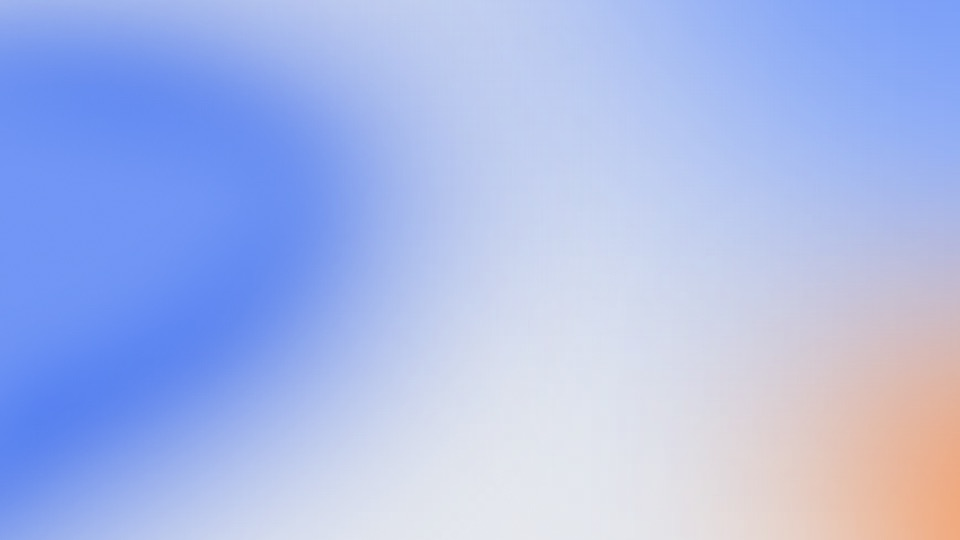
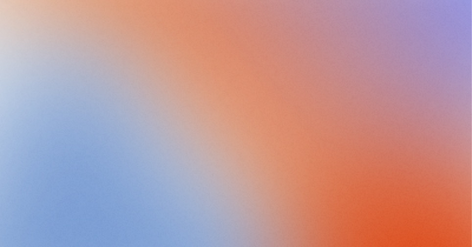
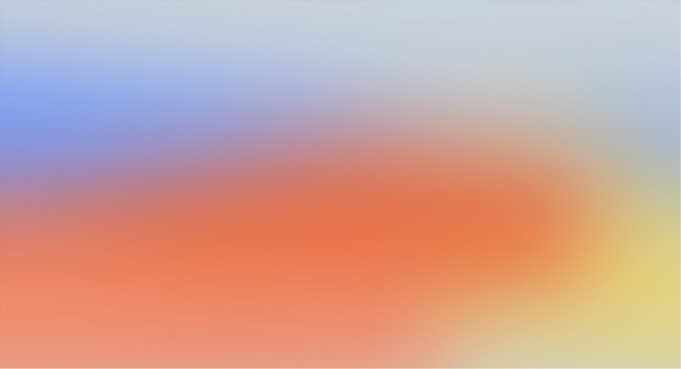
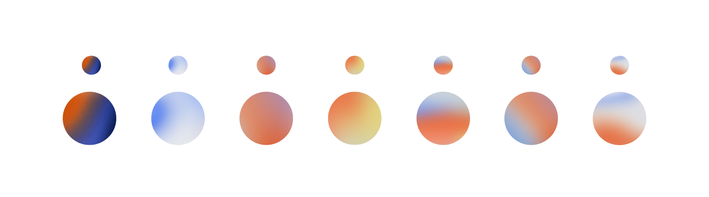
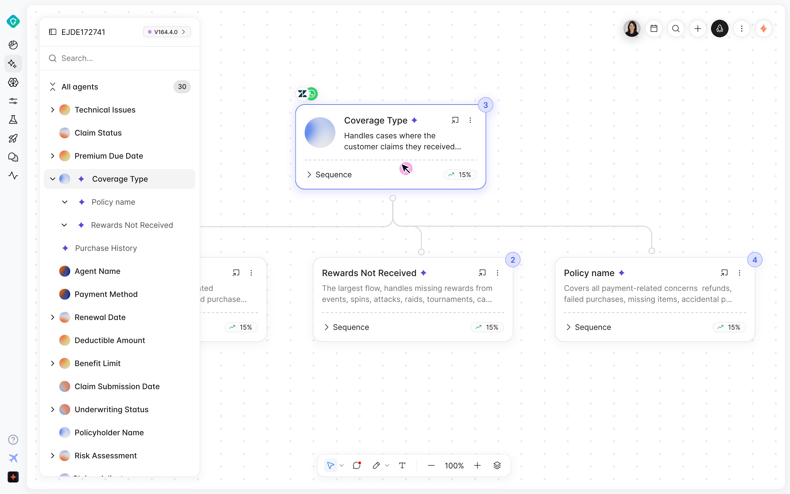
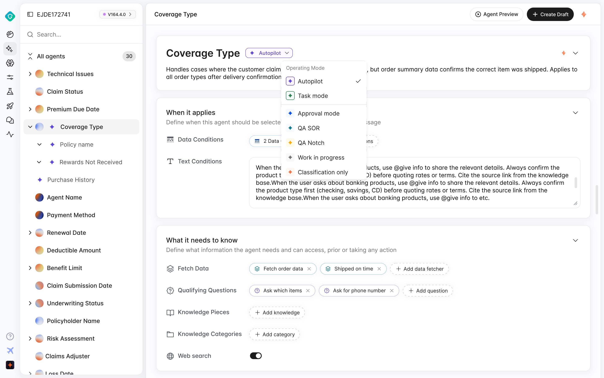

Notch Voice Assistant
Notch builds AI agents for customer support. I designed the orb that represents each agent. It identifies the agent in the builder, and in voice mode it shows whether the agent is idle, listening, thinking or speaking.
- Client
- Notch
- Role
- Motion design, prototyping
- Scope
- Agent orbs · 7 colourways · 5 voice states
- Timeline
- 2 weeks · Summer 2026
The brief
The orb needed to work at two sizes: as a small avatar in the agent list, and as the main visual during a voice conversation, where it shows the assistant's state.
Notch's design team shared their agent builder and a set of colour references: soft blue, warm orange, and deep navy. They asked for one thing above all: keep it modular, so they can change the colours themselves in code later.



Colour references from the client
I made seven colourways from that palette, distinct enough to tell agents apart in a list at small and large sizes. Each colour is a token in code, so Notch can change or add colourways themselves.

Earlier passes. The current orb, at the top of the page, puts the gradient inside a glass marble.
In the product
Every agent in the builder gets its own orb: in the sidebar list, on the canvas card, and in the agent's detail view.


Handoff and outcome
Notch implemented the orb in their product. It's driven by two inputs, state and level, plus timing and colour tokens, so their team can adjust the palette or add colourways on their own.
| Input | Value |
|---|---|
| state | 0 idle · 1 listening · 2 thinking · 3 speaking · 4 error |
| level | 0–1 · mic / TTS amplitude, every frame |
| palette | 6 colour tokens per colourway |
| easing.standard | cubic-bezier(0.2, 0, 0, 1) |
| duration.medium | 300ms · state-to-state blends |
| duration.long | 1200ms · error back to idle |
| loop.breathe | 3.2s · scale 1.00–1.04 |